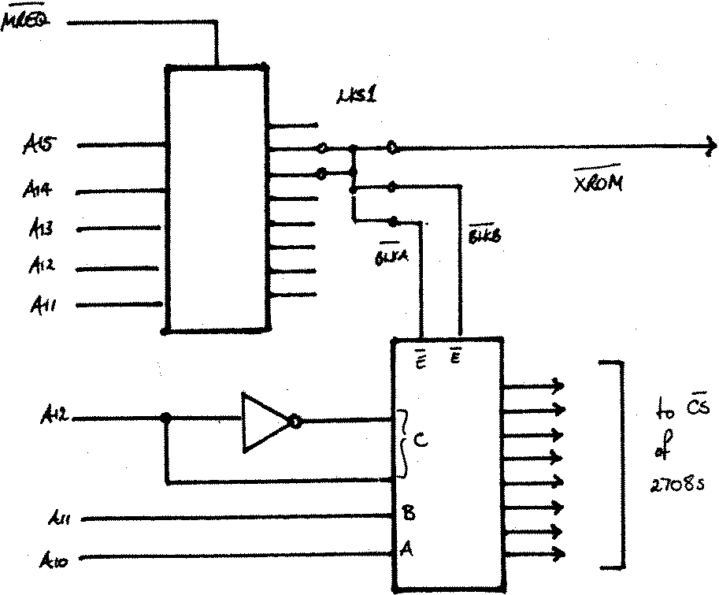
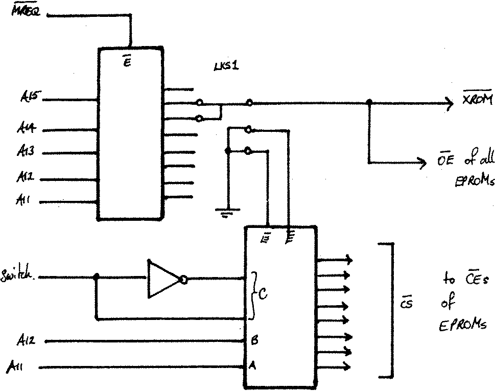

80-Bus News |
September–October 1983 · Volume 2 · Issue 5 |
| Page 25 of 67 |
|---|
Here we are again! It only seems like yesterday that I finished the previous one of these. [Ed. – I’m sure there was something similar to this said in Vol.2 Iss.3. Zero points for originality!] Anyway as promised…
A letter from Bill Stewart of Kings Lynn has prompted me to blow the dust off my Nascom 2. He has modified his N2 to take 2716 EPROMs in place of the 2708s in the eight sockets on the main pcb and has run into a speed problem. He has found that he has to use wait states if he wants to execute code in the 2716s. (His system runs at 4MHz). His letter doesn’t explain why, but he’s trying to squeeze the last drop of speed out of his N2, and his current target is to only enable wait states while accessing the on-board EPROMs during M1 cycles.
Rather than tackling his problem directly, I’ve taken one step back from it to the question of how you should modify the N2 to support the 2716 & 2732 type EPROMs. Bill doesn’t say how he has modified his N2, but various suggestions have been published in the NEWS [1][2][3]. I would hope that the suggested approach below would allow the EPROMs to be used without wait states. The 2716/32 type of EPROMs, as well as having a greater capacity than the 2708 and only requiring a single +5v supply, also have a more more subtle difference. When the 2716 was first introduced by Intel, if my memory serves me right, pin 18 was designated PWR DWN, and pin 20 was /CS. (If you check the data sheets you will find that the 2716s power consumption drops by about a factor of 5 when pin 18 is at a ‘1’). Shortly afterwards they renamed the pins, and pin 18 became /CE (Chip Enable) and pin 20 /0E (Output Enable). The distinction is fairly important, and if you check the data sheet again you’ll see why. The access time for a standard 2716 is 450ns from the address lines and the /CE pin, but only 120ns from the /OE pin. Thus in a memory system, in order to make the most of the EPROM, the /CE decoding should be done as soon as the address is available. Any later qualification, (like using /MREQ to distinguish between a memory or an IO access), should preferably be applied to the /OE signal. Also the 2-pin approach makes it easy to design systems without memory contention problems.

Fig 1 – Normal decode

Fig 2 – Modified decode
| Page 25 of 67 |
|---|